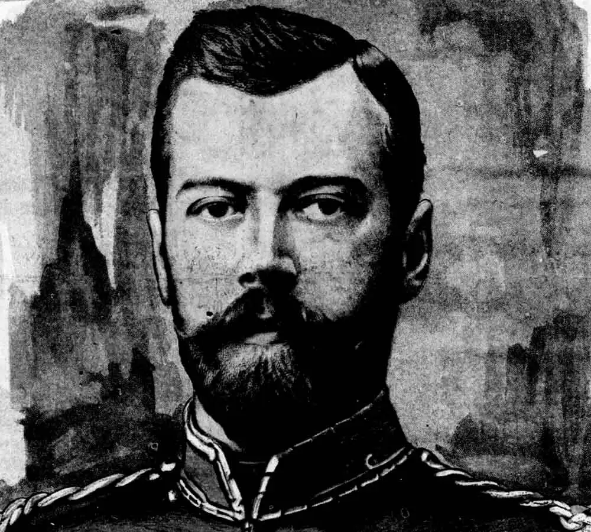
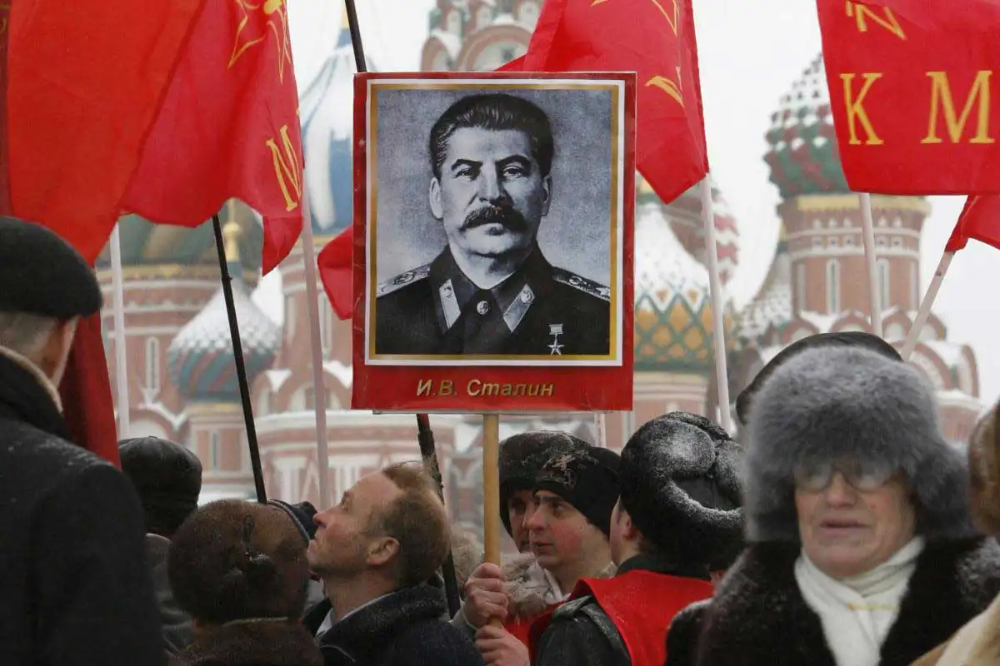

Russian & Bolshevik Revolution vs Russian Civil War: What's the Difference?
There was great social and economic upheaval in Russia during the early 1900s as it became the Soviet Union. What happened, and when?

